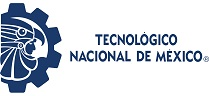

Un equipo de investigadores del IT Ciudad Valles visita comunidades de la Huasteca para documentar el maíz nativo que sus familias han cuidado por generaciones.
↓ leer más
Muchas familias de la Huasteca llevan generaciones sembrando maíces propios: granos de colores únicos, nombres en lengua originaria y saberes que se enseñan de abuela a nieta. Ese conocimiento no está en ningún libro.
Hoy esos maíces están en peligro. El campo se está abandonando, el clima está cambiando y las semillas comerciales están ocupando su lugar. Antes de que se pierdan para siempre, queremos registrarlos contigo.
"El maíz nativo no es solo comida. Es identidad, memoria y territorio. Documentarlo es la primera forma de protegerlo."
Por eso los investigadores del IT Ciudad Valles visitan comunidades de la Huasteca — para escuchar, aprender y construir juntos un mapa vivo del maíz nativo.
Cuando el equipo llega a tu comunidad, el proceso es sencillo, respetuoso y a tu ritmo. Nadie te obliga a compartir nada que no quieras.
El equipo siempre llega con el permiso de la comunidad o con presentación a las autoridades. Nadie entra sin que los vecinos sepan para qué vienen.
Antes de cualquier pregunta, el equipo explica exactamente qué se registra, para qué sirve y quién puede verlo. Si decides participar, firmas un consentimiento — o lo manifiestas de palabra, si lo prefieres.
Una conversación tranquila sobre los maíces que siembras: sus nombres, colores, cómo los cuidas y qué significan para ti. Se puede hacer en español, náhuatl, tének u otomí.
Si aceptas, el equipo toma coordenadas de tu parcela con GPS y algunas fotos de la milpa y la mazorca. Las fotos son para el registro científico, nunca para publicidad.
Al final del proyecto, el equipo regresa a las comunidades para compartir los mapas y los resultados. La información se devuelve a quienes la generaron.
Participar en el proyecto tiene beneficios concretos para las familias y la comunidad que van más allá de la investigación.
Guardamos solo lo necesario para documentar el maíz nativo. Tú decides qué compartir y siempre puedes consultar tus datos.
Coordenadas GPS de donde siembras, para colocar tu milpa en el mapa de conservación.
Nombre en tu lengua originaria, color del grano y cuántos años llevas sembrándola.
Solo nombre, municipio y años de experiencia. Sin datos bancarios, CURP ni información sensible.
Con tu permiso, fotos de la milpa y la mazorca para documentar la diversidad visual.
Tipo de suelo, sequías, plagas o heladas — para entender cómo el clima afecta tus cultivos.
Cómo seleccionas semilla, cuándo siembras y qué rituales acompañan al maíz — solo si quieres compartirlo.
Participar en este proyecto es completamente voluntario. En todo momento tienes estos derechos:
Nadie puede obligarte. Si dices que no, el equipo respeta tu decisión sin ninguna consecuencia.
Puedes dejar de participar en cualquier momento del proyecto, incluso después de haber dado tu consentimiento.
Puedes pedir al equipo una copia de toda la información que se guardó en tu visita.
Si algo está mal registrado, tienes derecho a que se corrija o elimine de la base de datos.
El proyecto nunca reclama derechos sobre tus variedades. Las semillas son tuyas y siempre lo seguirán siendo.
Las entrevistas se pueden hacer en náhuatl, tének u otomí. Tu lengua es bienvenida y respetada.
Tienes derecho a conocer qué encontró el proyecto y cómo se usaron los datos que compartiste.
Si sientes que algo no fue correcto, puedes dirigirte directamente al responsable del proyecto o al Comité de Ética del TecNM.
El equipo está visitando localidades de varios municipios de la Huasteca Potosina. Si tu comunidad no aparece aquí y quieres participar, ¡contáctanos!
Hay varias formas de sumarte al proyecto, según quién seas y qué puedas aportar.
Comparte tu conocimiento sobre las variedades que siembras, sus nombres, cómo las cuidas y qué problemas has visto. Tu saber es parte central de la investigación.
Los ancianos y ancianas de la comunidad son los guardianes del conocimiento más valioso. Sus palabras, en cualquier lengua, son bienvenidas.
El conocimiento del maíz se transmite en familia. Padres, madres e hijos pueden participar juntos en la entrevista si así lo desean.
Comisariados, delegados y autoridades pueden facilitar las visitas del equipo y ser el puente para que más familias participen.
Estas son las dudas que más nos preguntan cuando visitamos las comunidades. Si tienes otra, escríbenos sin comprometerte a nada.